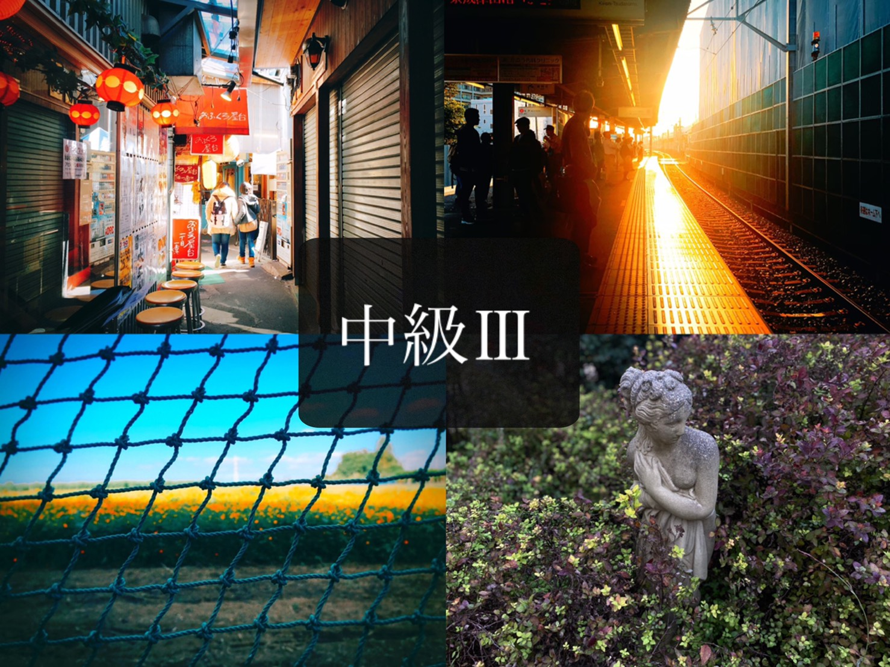
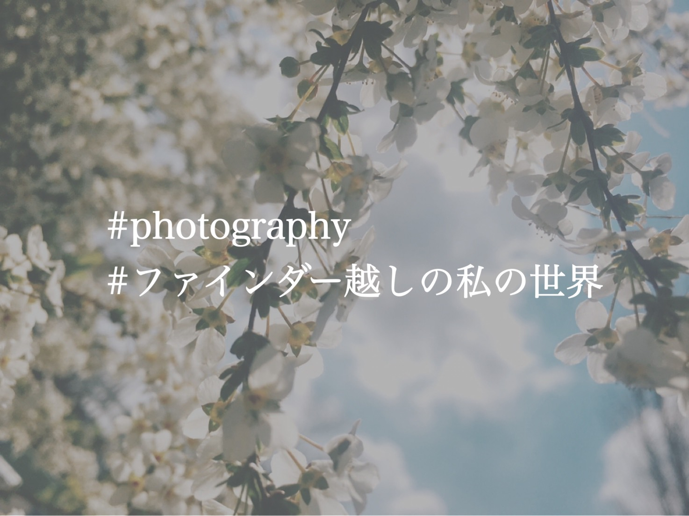
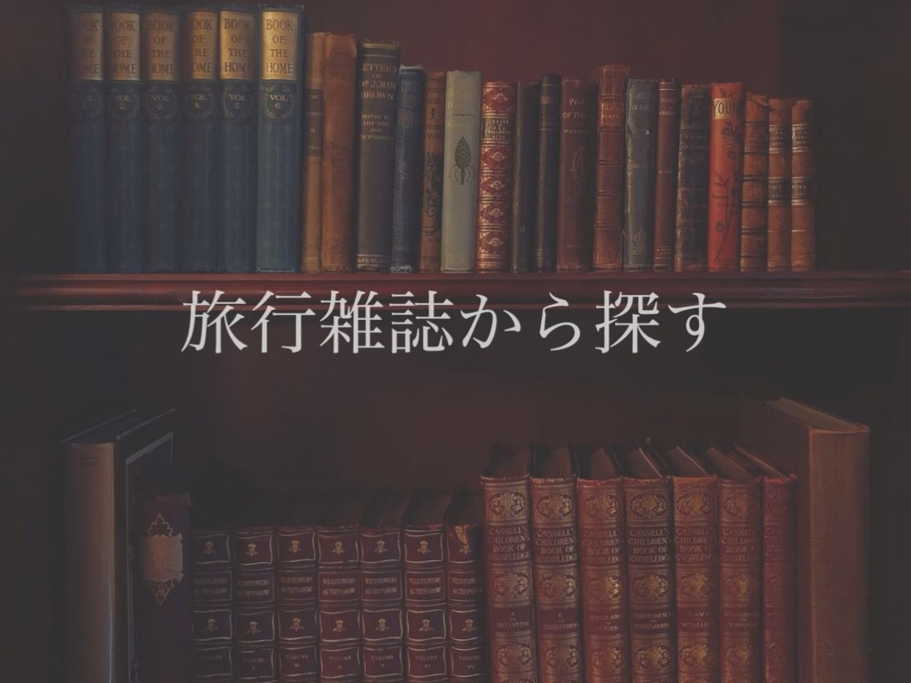
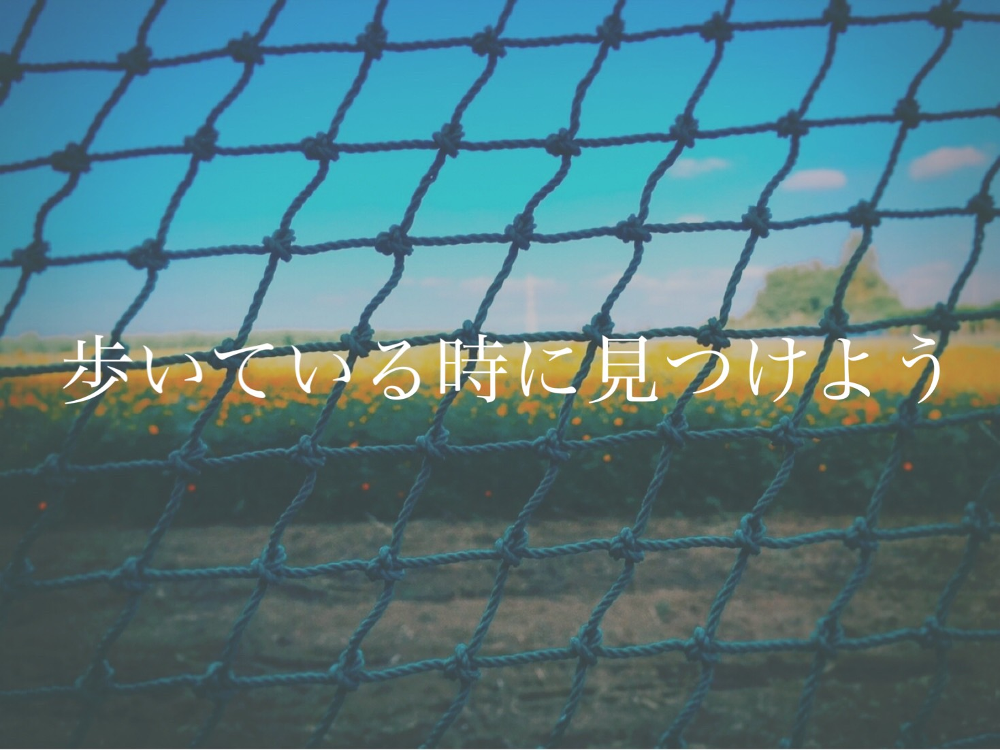
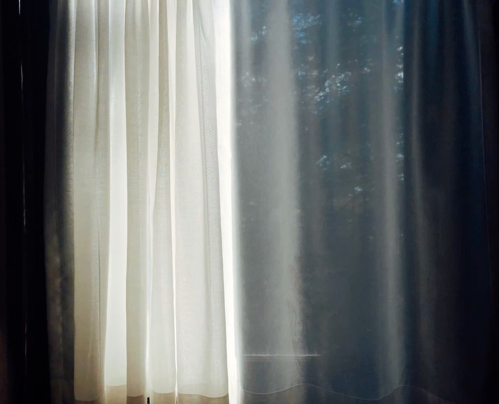

写真スポットサーチマスター

皆さんこんにちは。Nanaです。
中級編最後は写真スポットの探し方をご紹介します。

#photography #ファインダー越しの私の世界
こちらのハッシュタグを見たことがありますでしょうか。
これをSNSで検索してみてください。
世界中の写真家がこのハッシュタグで写真を投稿しているので、写真スポットを探すのには最適な方法です。

次は、旅行雑誌から探す方法です。
旅行雑誌から探す方法は基本的な方法ですが、沢山の旅行雑誌から探すのは大変ですよね。
オススメの旅行雑誌は"ことりっぷ"、"ココミル"です。是非お近くの書店でお探しください。

最後は、歩いているときに見つける方法です。
結論から言うと、とにかく自分の身の回りの物や風景をよく観察してください。
普段の景色でも、観察することで見え方が大きく変わってきます。
私の写真の多くは、実は日常で気づいた風景がほとんどなんです。
普段の景色を観察することで、視野も広がり今まで見ていた景色が一変するのも一つの利点です。

いかがでしたでしょうか。素敵な景色が見つけられるといいですね。
観光地もいいですが、普段の景色はあなたにとって特別な一枚になるでしょう。
是非素敵な場所を探してみてください。